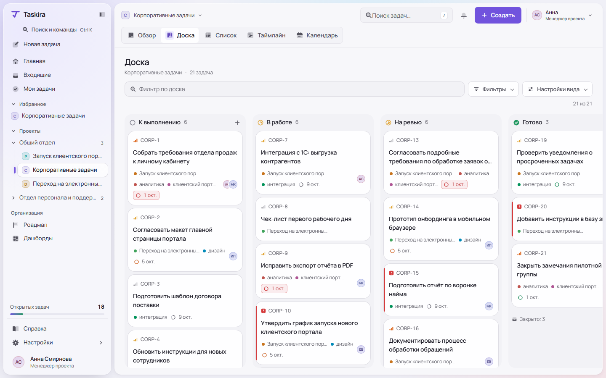
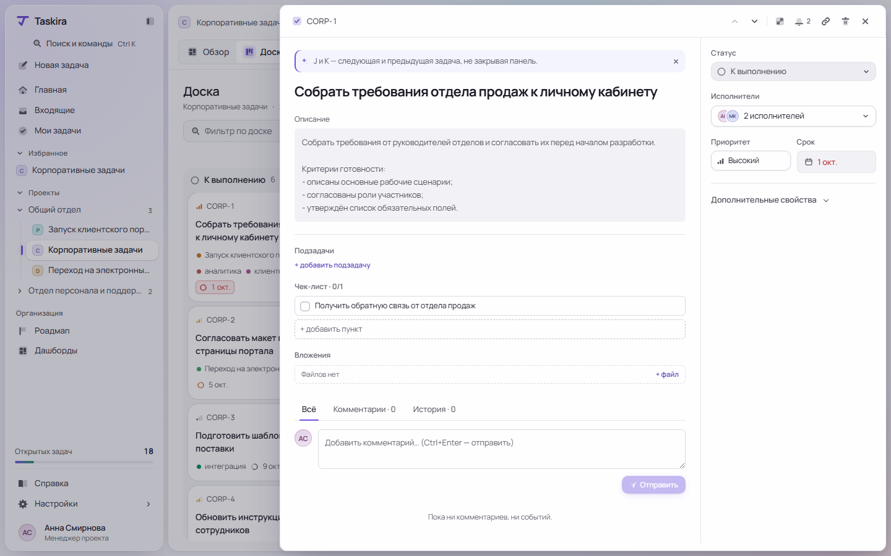
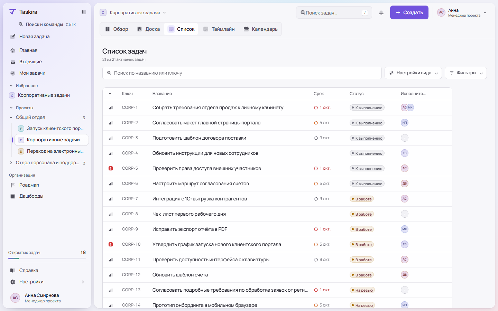
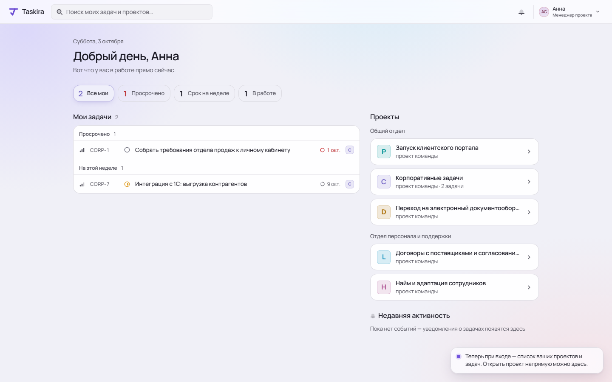
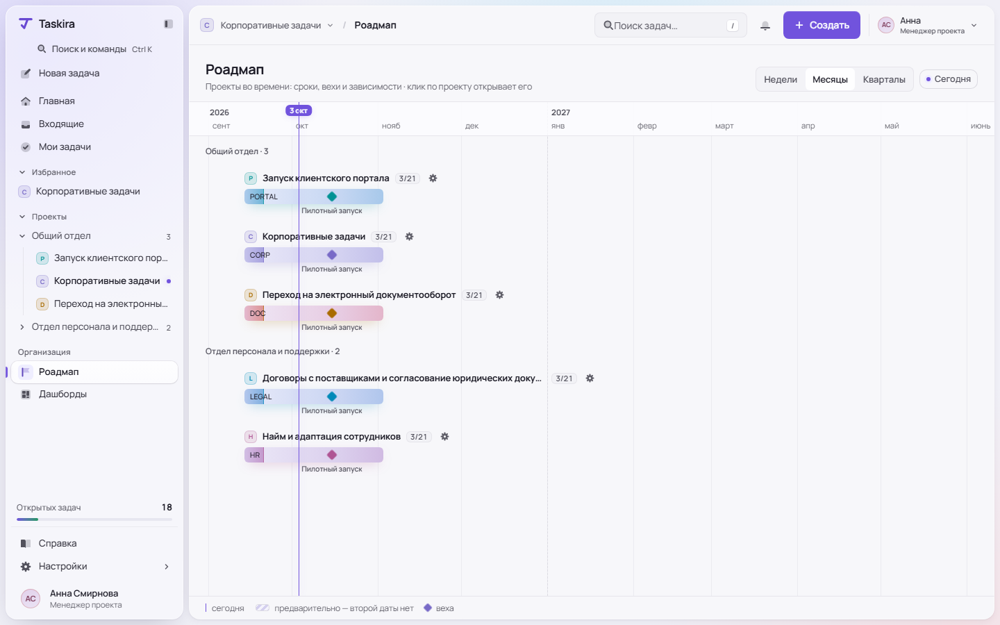
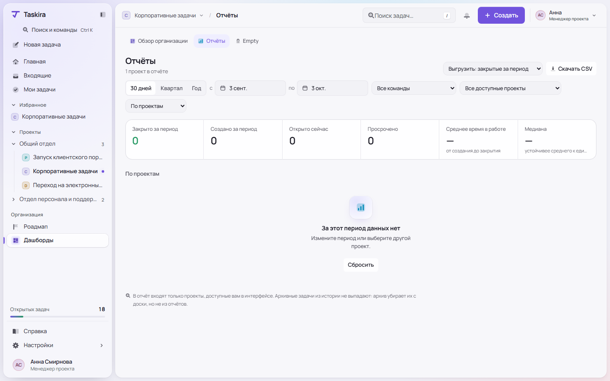

Токены в OKLCH, проверки контраста и движения в CI, собственные иконки, работа с клавиатурой и мобильной версией — это уровень хорошего продукта. Ощущение «чего-то не хватает» создают стыки: одна функция живёт в двух-трёх местах, служебные подсказки занимают место контента, а Главная, Отчёты и Роадмап собраны по другим правилам, чем Доска и Список.
Ниже шесть экранов. Слева — текущее состояние (скриншоты аудита 3 октября из docs/design/audit-2026-10-03/after), справа — предложение на тех же токенах, шрифте и иконках. Под каждой парой — что не так и что изменено.





